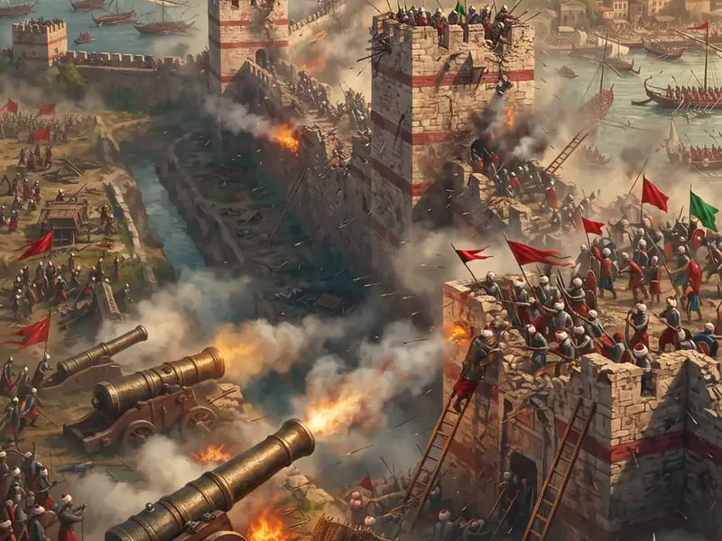
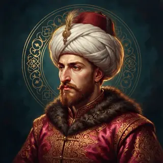

Fetih ve kuşatma
Surları döv, kaleyi al

Fatih Sultan Mehmed
Bin yıllık sur tek hamlede düşmez. Topunu dök, gemini hazırla, vaktini bekle.
- 24 şehirlik fetih haritası: yalnızca sınırdaki şehre sefer açılır; her kalenin arazisi, suru ve garnizonu ayrıdır.
- Üç kol, iki saf: yaya, okçu, sipahi ve topçuyu diz; araziyi, kanatları ve surları hesaba kat.
- Koyunhisar’dan Mohaç’a, Varna’dan Viyana Kuşatması’na 19 meşhur muharebe.
- Akına çık, ganimetle dön; Sur Dövme’de topçunu talim ettir, surlarını yükseltip yurdunu baskına karşı koru.